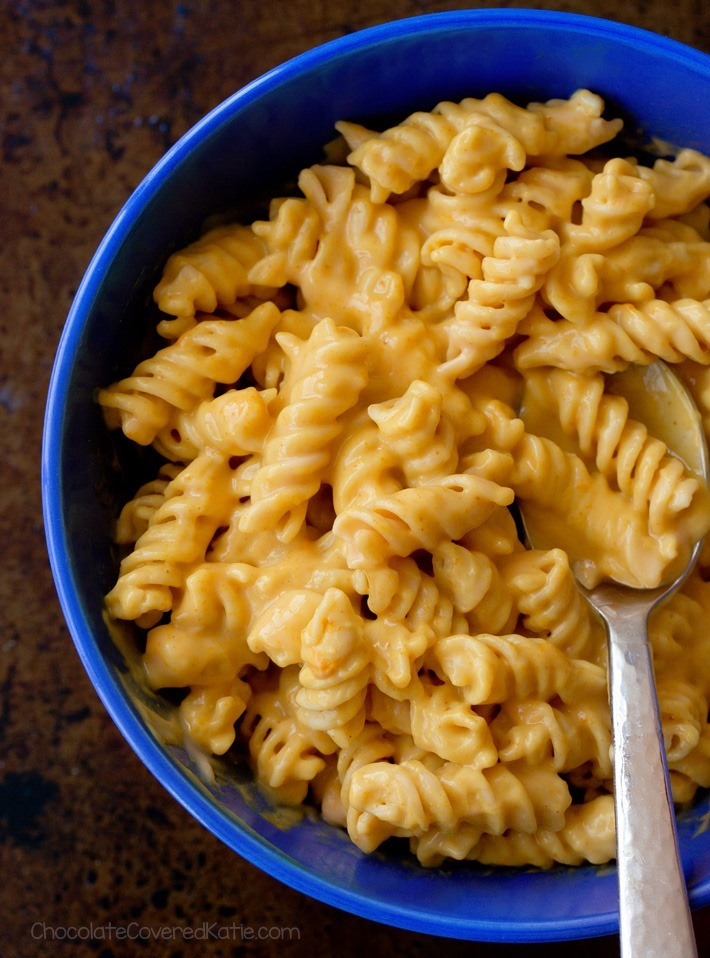

Pumpkin Mac & Cheese Recipe

A delicious and creamy Pumpkin Mac and Cheese that's perfect for fall and winter. The yummy cheese sauce is super creamy and gooey. Make it in under 30 minutes for a simple weeknight meal!
We really love pumpkin season and one of our favorite fall recipes is this Pumpkin Mac and Cheese. It's so creamy, rich and delicious with just the right amount of pumpkin goodness. This dish also comes together in under 30 minutes, which we're huge fans of, so it makes a perfect weeknight dinner!
This is the ultimate in cozy recipes. The pumpkin cheese sauce is super gooey and flavorful. It's all about the sauce for this one! It's pretty easy to make once you have all your ingredients organized.
Ingredients
- 366gr milk
- 245gr pumpkin puree
- 340.2gr fusilli
- 3 tablespoons unsalted butter
- 3 1/2 tablespoons all purpose flour
- 1 ½ tablespoons minced thyme
- 113.4gr shredded sharp cheddar cheese
- 56.7gr shredded gouda
- 30gr toasted panko
- salt and pepper to taste
Instructions
- Stir together milk and pumpkin puree.
- Fill a large pot with water and bring to a boil. Once the water comes to a boil add a generous amount of salt (2½ or 3 tablespoons) and then the pasta. Boil pasta for 8 to 10 minutes or until al dente, stirring occasionally. Drain pasta and set aside.
- Melt butter over medium heat in a medium saucepan. Sprinkle flour over melted butter and whisk together. Allow mixture to cook for 2 to 3 minutes. Stir in thyme.
- Whisk pumpkin-milk mixture into flour mixture and continue to whisk until fully incorporated. Allow mixture to simmer until thick enough to coat the back of a wooden spoon, 3 to 4 minutes. Season with salt and pepper.
- Remove from heat and stir cheese into the béchamel sauce, in small handfuls, and stir until cheese just melts before adding more cheese.
- Reduce heat to low and gently stir pasta into the sauce, ½ cup at a time until all of the pasta has been added and is fully coasted in sauce. Adjust seasonings.
- Serve Pumpkin Mac and Cheese into bowls and top with fresh thyme and toasted panko.
Back to Main Page